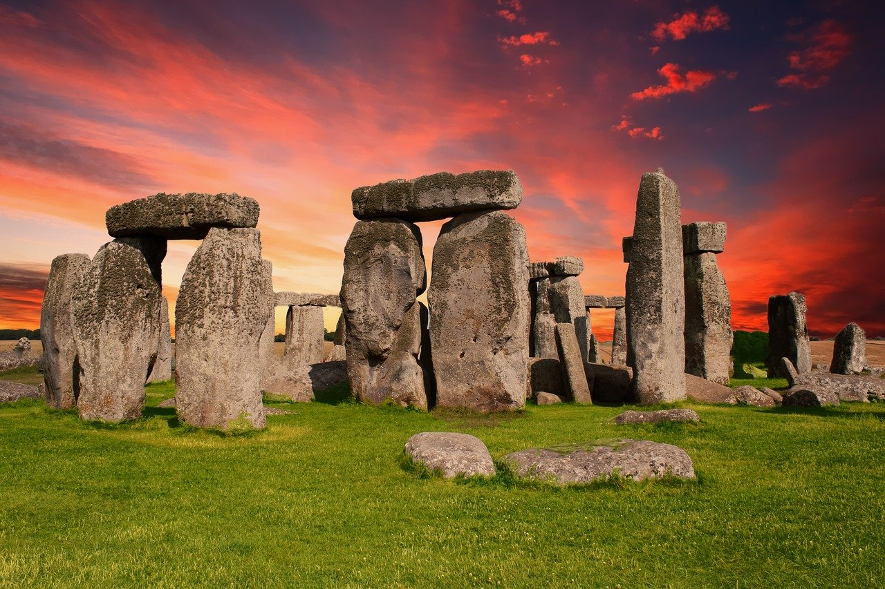

London

"A captivating blend of history, culture, and endless possibilities in one iconic city."
- Visit the British Museum: Explore a vast collection of art and artifacts from around the world.
- Take a stroll along the South Bank: Enjoy iconic landmarks like Tower Bridge and Shakespeare's Globe Theatre.
- Experience the Changing of the Guard at Windsor Castle: Witness the impressive ceremony and explore the castle grounds.
- Explore Camden Market: Immerse yourself in the eclectic atmosphere of this vibrant market with unique stalls and street food.
- Discover the Tower of London: Uncover the history of this ancient fortress, see the Crown Jewels, and learn about its role throughout the centuries.
Lake District

"Known for its breathtaking landscapes, it is a haven for nature lovers and outdoor enthusiasts."
- Lake Windermere: England's largest natural lake, perfect for boating and lakeside walks.
- Scafell Pike: The highest mountain in England, offering stunning views for hikers.
- Beatrix Potter's Hill Top: The preserved home of the beloved author, showcasing her inspiration and gardens.
- Derwentwater: A scenic lake for boat trips, hiking, and picnics.
- Castlerigg Stone Circle: An ancient monument dating back to around 3000 BC, mystical charm and panoramic mountain views await.
Stonehenge
"Enigmatic monoliths rise, whispering ancient tales. Unveil the mysteries of this awe-inspiring prehistoric marvel."
- Timeless Enigma: Encounter the captivating allure of ancient monoliths, standing tall with a sense of mystery.
- Visitor Center: Engaging exhibits that unveil the rich history and cultural significance of the site.
- Sacred Landscape: Explore burial mounds, ancient pathways, and intriguing archaeological wonders in the surroundings.
- Solstice Celebrations: Witness magical events aligning with the sun, immersing visitors in an awe-inspiring experience.
- Guided Experiences: Join knowledgeable experts on captivating tours, delving into the mysteries of this ancient marvel.